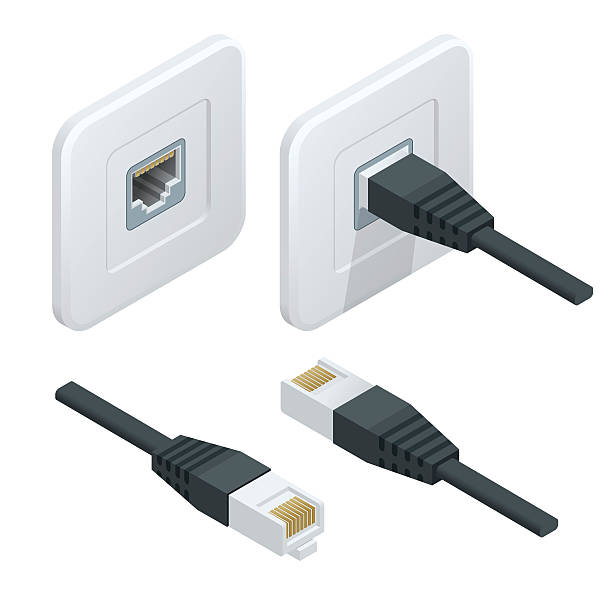

أساسيات التبديل
مقدمة في التبديل
التبديل (Switching) هو عملية توجيه البيانات بين الأجهزة داخل شبكة محلية (LAN). يعتبر التبديل من العمليات الأساسية في الشبكات الحديثة، حيث يسمح للأجهزة بالتواصل بكفاءة وسرعة عالية داخل نفس الشبكة.
يتم تنفيذ عملية التبديل بواسطة أجهزة متخصصة تسمى المبدلات أو السويتشات (Switches)، والتي تعمل في طبقة وصلة البيانات (الطبقة الثانية) من نموذج OSI. تستخدم السويتشات عناوين MAC (العناوين الفيزيائية) لاتخاذ قرارات التبديل.
رسم توضيحي لعملية التبديل داخل شبكة محلية وكيف يستخدم السويتش عناوين MAC لتوجيه الإطارات.
كيف يعمل التبديل؟
عندما تريد إرسال بيانات من جهاز إلى آخر داخل نفس الشبكة المحلية، تمر هذه البيانات عبر عدة خطوات:
- إنشاء الإطار (Frame): يقوم الجهاز المصدر بتغليف البيانات في إطار يحتوي على عنوان MAC للمصدر وعنوان MAC للوجهة.
- إرسال الإطار: يرسل الجهاز المصدر الإطار إلى السويتش.
- معالجة الإطار: يستلم السويتش الإطار ويقرأ عنوان MAC للوجهة.
- البحث في جدول العناوين: يبحث السويتش في جدول عناوين MAC الخاص به لتحديد المنفذ المتصل بالجهاز الوجهة.
- توجيه الإطار: يرسل السويتش الإطار فقط إلى المنفذ المتصل بالجهاز الوجهة.
- استلام الإطار: يستلم الجهاز الوجهة الإطار ويستخرج البيانات منه.
جدول عناوين MAC (MAC Address Table)
جدول عناوين MAC (يسمى أيضًا جدول التبديل أو جدول CAM) هو قاعدة بيانات يحتفظ بها السويتش، وتحتوي على معلومات تربط بين عناوين MAC والمنافذ المتصلة بها. يستخدم السويتش هذا الجدول لاتخاذ قرارات التبديل.
يتم بناء جدول عناوين MAC بشكل ديناميكي من خلال عملية تسمى "التعلم" (Learning)، حيث يقوم السويتش بما يلي:
- فحص عنوان MAC المصدر في كل إطار يستلمه.
- تسجيل عنوان MAC المصدر والمنفذ الذي استلم منه الإطار في جدول العناوين.
- تحديث الجدول عندما يتغير موقع الجهاز.
مثال على جدول عناوين MAC:
| عنوان MAC | المنفذ | نوع الإدخال | العمر |
|---|---|---|---|
| 00:1A:2B:3C:4D:5E | Fa0/1 | ديناميكي | 300 ثانية |
| 00:6F:7G:8H:9I:0J | Fa0/2 | ديناميكي | 250 ثانية |
| 00:AA:BB:CC:DD:EE | Fa0/3 | ثابت | - |
طرق توجيه الإطارات
يستخدم السويتش ثلاث طرق رئيسية لتوجيه الإطارات:
1. التوجيه المباشر (Unicast)
عندما يعرف السويتش المنفذ المتصل بالجهاز الوجهة (من خلال جدول عناوين MAC)، يرسل الإطار فقط إلى ذلك المنفذ. هذه هي الطريقة الأكثر كفاءة.
2. البث (Broadcast)
عندما يكون عنوان MAC للوجهة هو عنوان البث (FF:FF:FF:FF:FF:FF)، يرسل السويتش الإطار إلى جميع المنافذ باستثناء المنفذ الذي استلم منه الإطار.
3. الفيضان (Flooding)
عندما لا يعرف السويتش المنفذ المتصل بالجهاز الوجهة (لأن عنوان MAC غير موجود في جدول العناوين)، يرسل الإطار إلى جميع المنافذ باستثناء المنفذ الذي استلم منه الإطار. هذه الطريقة تستخدم عندما يستلم السويتش إطارًا لأول مرة لجهاز غير معروف.
أنواع السويتشات
هناك عدة أنواع من السويتشات، تختلف في قدراتها وميزاتها وتكلفتها:
1. السويتشات غير المدارة (Unmanaged Switches)
هي سويتشات بسيطة تعمل بشكل تلقائي دون الحاجة إلى تكوين. تستخدم في الشبكات الصغيرة والمنزلية.
خصائص السويتشات غير المدارة:
- سهلة الاستخدام (توصيل وتشغيل).
- تكلفة منخفضة.
- لا تحتاج إلى تكوين.
- ميزات محدودة.
2. السويتشات المدارة (Managed Switches)
هي سويتشات متقدمة توفر إمكانيات إدارة وتكوين متعددة. تستخدم في الشبكات المتوسطة والكبيرة.
خصائص السويتشات المدارة:
- توفر واجهة إدارة (CLI، Web، SNMP).
- تدعم ميزات متقدمة مثل VLAN و QoS و STP.
- توفر إمكانيات مراقبة وتشخيص.
- تكلفة أعلى.
- تحتاج إلى خبرة للتكوين والإدارة.
3. السويتشات الذكية (Smart Switches)
هي سويتشات تقع بين السويتشات غير المدارة والمدارة، توفر بعض ميزات الإدارة بتكلفة أقل من السويتشات المدارة الكاملة.
خصائص السويتشات الذكية:
- توفر واجهة إدارة بسيطة (عادة عبر الويب).
- تدعم بعض الميزات المتقدمة مثل VLAN الأساسية.
- تكلفة متوسطة.
- سهولة التكوين مقارنة بالسويتشات المدارة الكاملة.
طرق التبديل
هناك ثلاث طرق رئيسية للتبديل في السويتشات:
1. التبديل المباشر (Cut-Through Switching)
في هذه الطريقة، يبدأ السويتش بإرسال الإطار بمجرد قراءة عنوان MAC للوجهة، دون انتظار استلام الإطار بالكامل. هذا يقلل من التأخير ولكنه قد يؤدي إلى نقل إطارات تالفة.
أنواع التبديل المباشر:
- التبديل السريع (Fast-Forward Switching): يبدأ الإرسال بمجرد قراءة عنوان MAC للوجهة.
- التبديل الخالي من الأخطاء (Fragment-Free Switching): ينتظر استلام أول 64 بايت من الإطار (حيث تحدث معظم الأخطاء) قبل بدء الإرسال.
2. التبديل المخزن والمرسل (Store-and-Forward Switching)
في هذه الطريقة، ينتظر السويتش استلام الإطار بالكامل ويتحقق من سلامته قبل إرساله. هذا يزيد من التأخير ولكنه يمنع نقل الإطارات التالفة.
مميزات التبديل المخزن والمرسل:
- يتحقق من سلامة الإطار باستخدام CRC.
- يمنع انتشار الإطارات التالفة في الشبكة.
- يسمح بتبديل الإطارات بين منافذ ذات سرعات مختلفة.
3. التبديل الهجين (Adaptive Switching)
في هذه الطريقة، يمكن للسويتش التبديل بين طريقة التبديل المباشر وطريقة التبديل المخزن والمرسل بناءً على ظروف الشبكة. على سبيل المثال، قد يستخدم التبديل المباشر عندما تكون نسبة الأخطاء منخفضة، ويتحول إلى التبديل المخزن والمرسل عندما تزداد نسبة الأخطاء.
ميزات السويتشات المتقدمة
تدعم السويتشات المدارة العديد من الميزات المتقدمة التي تحسن أداء وأمان وإدارة الشبكة:
1. الشبكات المحلية الافتراضية (VLAN)
تسمح الشبكات المحلية الافتراضية بتقسيم شبكة فيزيائية واحدة إلى عدة شبكات منطقية منفصلة. هذا يحسن الأداء والأمان ويسهل إدارة الشبكة. (سنتناول هذا الموضوع بالتفصيل في الدرس القادم)
2. بروتوكول شجرة التغطية (Spanning Tree Protocol - STP)
يمنع بروتوكول شجرة التغطية حدوث حلقات في الشبكة عند وجود مسارات متعددة بين السويتشات. يعمل STP على اختيار مسار واحد للبيانات وتعطيل المسارات الأخرى، مع الاحتفاظ بها كمسارات احتياطية في حالة فشل المسار الرئيسي.
كيف يعمل STP:
- اختيار سويتش جذر (Root Bridge) بناءً على أولوية السويتش وعنوان MAC.
- تحديد المنفذ الجذر (Root Port) على كل سويتش غير جذر.
- تحديد المنفذ المعين (Designated Port) على كل قطعة شبكة.
- حظر المنافذ الأخرى (Blocked Ports) لمنع الحلقات.
إصدارات STP:
- STP الأصلي (IEEE 802.1D): الإصدار الأصلي، يستغرق حوالي 30-50 ثانية للتقارب.
- RSTP (Rapid STP - IEEE 802.1w): إصدار محسن، يستغرق حوالي 1-5 ثوانٍ للتقارب.
- MSTP (Multiple STP - IEEE 802.1s): يدعم عدة مثيلات STP للشبكات المحلية الافتراضية المختلفة.
3. تجميع الوصلات (Link Aggregation)
يسمح تجميع الوصلات (يسمى أيضًا EtherChannel أو Port Channel) بدمج عدة وصلات فيزيائية في وصلة منطقية واحدة. هذا يزيد من عرض النطاق الترددي ويوفر تكرارًا في حالة فشل إحدى الوصلات.
بروتوكولات تجميع الوصلات:
- PAgP (Port Aggregation Protocol): بروتوكول خاص بشركة سيسكو.
- LACP (Link Aggregation Control Protocol - IEEE 802.3ad): بروتوكول قياسي يدعمه معظم المصنعين.
4. جودة الخدمة (Quality of Service - QoS)
تسمح جودة الخدمة بإعطاء أولوية لأنواع معينة من حركة البيانات (مثل الصوت والفيديو) على حساب أنواع أخرى (مثل نقل الملفات). هذا يضمن أداءً أفضل للتطبيقات الحساسة للتأخير.
آليات QoS:
- تصنيف وتمييز الحزم: تحديد نوع حركة البيانات.
- وضع علامات على الحزم: تعيين قيم أولوية للحزم.
- جدولة الحزم: تحديد ترتيب إرسال الحزم بناءً على أولويتها.
- تشكيل حركة البيانات: التحكم في معدل إرسال البيانات.
5. مرآة المنفذ (Port Mirroring)
تسمح مرآة المنفذ (تسمى أيضًا SPAN في سويتشات سيسكو) بنسخ حركة البيانات من منفذ أو عدة منافذ إلى منفذ آخر للمراقبة والتحليل. هذا مفيد لاستكشاف الأخطاء وإصلاحها ومراقبة الشبكة.
6. الأمان على مستوى المنفذ (Port Security)
يسمح الأمان على مستوى المنفذ بتقييد عدد وهوية الأجهزة التي يمكنها الاتصال بمنفذ معين. هذا يمنع الوصول غير المصرح به إلى الشبكة.
خيارات الأمان على مستوى المنفذ:
- تقييد عدد عناوين MAC: تحديد الحد الأقصى لعدد الأجهزة التي يمكنها الاتصال بالمنفذ.
- تقييد عناوين MAC محددة: السماح فقط لأجهزة معينة بالاتصال بالمنفذ.
- إجراءات الانتهاك: تحديد ما يحدث عند انتهاك سياسة الأمان (مثل إغلاق المنفذ أو إرسال إشعار).
تكوين السويتش الأساسي
فيما يلي بعض الأوامر الأساسية لتكوين سويتش سيسكو:
1. الإعدادات الأساسية
Switch> enable // الدخول إلى وضع التمكين
Switch# configure terminal // الدخول إلى وضع التكوين العام
Switch(config)# hostname SW1 // تعيين اسم للسويتش
SW1(config)# enable secret password // تعيين كلمة مرور للوضع الممكن
SW1(config)# line console 0 // الدخول إلى وضع تكوين خط وحدة التحكم
SW1(config-line)# password password // تعيين كلمة مرور لخط وحدة التحكم
SW1(config-line)# login // تمكين المصادقة
SW1(config-line)# exit // الخروج من وضع تكوين الخط
2. تكوين واجهة الإدارة
SW1(config)# interface vlan 1 // الدخول إلى وضع تكوين واجهة VLAN 1
SW1(config-if)# ip address 192.168.1.10 255.255.255.0 // تعيين عنوان IP
SW1(config-if)# no shutdown // تمكين الواجهة
SW1(config-if)# exit // الخروج من وضع تكوين الواجهة
SW1(config)# ip default-gateway 192.168.1.1 // تعيين البوابة الافتراضية
3. تكوين المنافذ
SW1(config)# interface fastethernet 0/1 // الدخول إلى وضع تكوين المنفذ
SW1(config-if)# description Connection to PC1 // إضافة وصف للمنفذ
SW1(config-if)# speed 100 // تعيين سرعة المنفذ
SW1(config-if)# duplex full // تعيين وضع الازدواج
SW1(config-if)# no shutdown // تمكين المنفذ
4. عرض معلومات السويتش
SW1# show running-config // عرض التكوين الحالي
SW1# show interfaces // عرض معلومات عن جميع الواجهات
SW1# show mac address-table // عرض جدول عناوين MAC
SW1# show vlan // عرض معلومات عن الشبكات المحلية الافتراضية
SW1# show spanning-tree // عرض معلومات عن بروتوكول شجرة التغطية
تطبيقات عملية للتبديل
1. تكوين شبكة محلية بسيطة
لنفترض أن لدينا شبكة محلية بسيطة تتكون من سويتش واحد وعدة أجهزة:
SW1(config)# hostname SW1
SW1(config)# enable secret cisco
SW1(config)# interface vlan 1
SW1(config-if)# ip address 192.168.1.10 255.255.255.0
SW1(config-if)# no shutdown
SW1(config-if)# exit
SW1(config)# ip default-gateway 192.168.1.1
SW1(config)# interface range fastethernet 0/1 - 24
SW1(config-if-range)# no shutdown
2. تكوين الأمان على مستوى المنفذ
لنفترض أننا نريد تقييد المنفذ Fa0/1 ليسمح فقط بجهاز واحد بعنوان MAC محدد:
SW1(config)# interface fastethernet 0/1
SW1(config-if)# switchport mode access
SW1(config-if)# switchport port-security
SW1(config-if)# switchport port-security maximum 1
SW1(config-if)# switchport port-security mac-address 00:1A:2B:3C:4D:5E
SW1(config-if)# switchport port-security violation shutdown
3. تكوين تجميع الوصلات
لنفترض أننا نريد تجميع المنافذ Fa0/1 و Fa0/2 في قناة واحدة باستخدام LACP:
SW1(config)# interface range fastethernet 0/1 - 2
SW1(config-if-range)# channel-group 1 mode active
SW1(config-if-range)# exit
SW1(config)# interface port-channel 1
SW1(config-if)# switchport mode trunk
4. تكوين مرآة المنفذ
لنفترض أننا نريد مراقبة حركة البيانات على المنفذ Fa0/1 باستخدام المنفذ Fa0/24:
SW1(config)# monitor session 1 source interface fastethernet 0/1
SW1(config)# monitor session 1 destination interface fastethernet 0/24
استكشاف أخطاء التبديل وإصلاحها
فيما يلي بعض المشكلات الشائعة في التبديل وكيفية استكشافها وإصلاحها:
1. مشكلات الاتصال
- المشكلة: عدم القدرة على الاتصال بين الأجهزة.
- الأسباب المحتملة: كابل معيب، منفذ معطل، إعدادات غير صحيحة، مشكلة في جدول عناوين MAC.
- الحل:
- التحقق من حالة المنفذ باستخدام الأمر
show interfaces. - التحقق من مؤشرات LED على السويتش والأجهزة.
- تجربة كابل آخر أو منفذ آخر.
- إعادة تعيين جدول عناوين MAC باستخدام الأمر
clear mac address-table.
- التحقق من حالة المنفذ باستخدام الأمر
2. مشكلات الأداء
- المشكلة: بطء في نقل البيانات أو تأخير عالي.
- الأسباب المحتملة: ازدحام الشبكة، عدم تطابق السرعة أو وضع الازدواج، حلقات في الشبكة.
- الحل:
- التحقق من إحصائيات الواجهة باستخدام الأمر
show interfaces. - التحقق من تكوين السرعة ووضع الازدواج.
- التحقق من حالة STP باستخدام الأمر
show spanning-tree. - استخدام أدوات مراقبة الشبكة لتحديد مصدر الازدحام.
- التحقق من إحصائيات الواجهة باستخدام الأمر
3. مشكلات الأمان
- المشكلة: انتهاكات الأمان على مستوى المنفذ، وصول غير مصرح به.
- الأسباب المحتملة: محاولات الوصول غير المصرح به، تغيير الأجهزة المتصلة.
- الحل:
- التحقق من حالة الأمان على مستوى المنفذ باستخدام الأمر
show port-security. - مراجعة سجلات السويتش باستخدام الأمر
show logging. - إعادة تعيين المنافذ المغلقة باستخدام الأمر
shutdownثمno shutdown.
- التحقق من حالة الأمان على مستوى المنفذ باستخدام الأمر
أفضل الممارسات في التبديل
فيما يلي بعض أفضل الممارسات التي يجب اتباعها عند تصميم وتنفيذ وإدارة شبكات التبديل:
1. تصميم الشبكة
- استخدام نموذج التصميم الهرمي (Core-Distribution-Access) للشبكات الكبيرة.
- تخطيط السعة بناءً على متطلبات عرض النطاق الترددي الحالية والمستقبلية.
- توفير التكرار في المكونات والمسارات الحرجة.
- تقسيم الشبكة إلى شبكات محلية افتراضية منطقية.
2. الأمان
- تغيير كلمات المرور الافتراضية.
- تعطيل المنافذ غير المستخدمة.
- استخدام الأمان على مستوى المنفذ لتقييد الوصول.
- تنفيذ DHCP Snooping لمنع هجمات DHCP المزيفة.
- استخدام Dynamic ARP Inspection لمنع هجمات ARP Poisoning.
3. الإدارة
- توثيق تكوين الشبكة وتغييراتها.
- استخدام SNMP لمراقبة السويتشات.
- تنفيذ NTP لمزامنة الوقت بين جميع أجهزة الشبكة.
- إعداد نسخ احتياطية منتظمة لتكوينات السويتشات.
- تحديث البرامج الثابتة بانتظام لإصلاح الثغرات الأمنية وتحسين الأداء.
خلاصة
التبديل هو عملية أساسية في الشبكات المحلية، تمكن الأجهزة من التواصل بكفاءة وسرعة عالية. فهم مبادئ التبديل وميزات السويتشات المختلفة يساعدك على تصميم وتنفيذ وإدارة شبكات محلية فعالة.
في هذا الدرس، تعلمنا:
- مفهوم التبديل وكيفية عمله.
- جدول عناوين MAC وكيفية بنائه.
- طرق توجيه الإطارات (التوجيه المباشر، البث، الفيضان).
- أنواع السويتشات (غير المدارة، مدارة، ذكية).
- طرق التبديل (المباشر، المخزن والمرسل، الهجين).
- ميزات السويتشات المتقدمة (VLAN، STP، تجميع الوصلات، QoS، مرآة المنفذ، الأمان على مستوى المنفذ).
- تكوين السويتش الأساسي.
- تطبيقات عملية للتبديل.
- استكشاف أخطاء التبديل وإصلاحها.
- أفضل الممارسات في التبديل.
في الدرس القادم، سنتعمق في مفهوم الشبكات المحلية الافتراضية (VLAN) وكيفية تنفيذها وإدارتها.